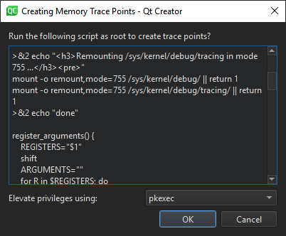

Analyze CPU usage
With Perf, you can analyze the CPU and memory usage of an application on Linux desktop and embedded devices. Performance Analyzer uses the Perf tool bundled with the Linux kernel to take periodic snapshots of the call chain of an application and visualizes them in a timeline view or as a flame graph.
Usually, Performance Analyzer needs debug symbols for the profiled binaries. Profile builds produce optimized binaries with separate debug symbols, so use them for profiling.
Collect data
Start Performance Analyzer in the following ways to collect data:
- Go to Analyze > Performance Analyzer to profile the current application.
- Select
 (Start) to start the application from the Performance Analyzer.
(Start) to start the application from the Performance Analyzer.
Note: If data collection does not start automatically, select  (Collect profile data).
(Collect profile data).
When you start analyzing an application, the application is launched, and Performance Analyzer immediately begins to collect data. This is indicated by the time running in Recorded. However, as the data is passed through the Perf tool and an extra helper program bundled with Qt Creator, and both buffer and process it on the fly, data may arrive in Qt Creator several seconds after it was generated. Processing delay shows an estimate of the delay.
Data is collected until you select (Stop collecting profile data) or close the application.
Select Stop collecting profile data to turn off the automatic start of the data collection when an application is launched. Profile data is still generated, but Qt Creator discards it until you select the button again.
Profile memory usage on devices
To create trace points for profiling memory usage on a target device:
- Go to Analyze > Performance Analyzer Options > Create Memory Trace Points.
- Select on the Performance Analyzer toolbar.
In the Create Memory Trace Points dialog, modify the script to run.

If you need root privileges to run scripts as root, select the privileges to use in Elevate privileges using.
Select OK to run the script.
To add events for the trace points, see Choosing Event Types.
Record a memory trace to view usage graphs in the samples rows of the timeline and to view memory allocations, peaks, and releases in the flame graph.
Generate separate debug info for qmake projects
To manually set up a build configuration that generates debug symbols also for applications compiled for release, edit the build settings of a qmake project:
- Go to Projects > Build Settings.
- In Separate debug info, select Enable.
- Select Yes to recompile the project.
See also How To: Analyze, Analyzers, Performance Analyzer, and Analyzing Code.